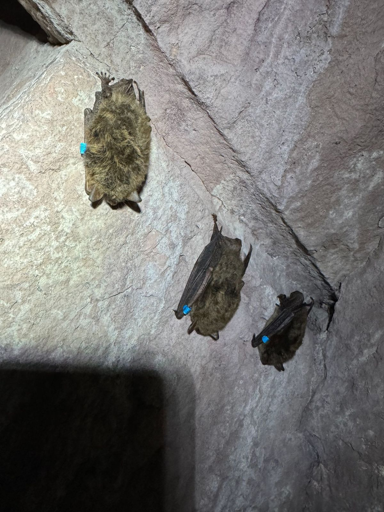
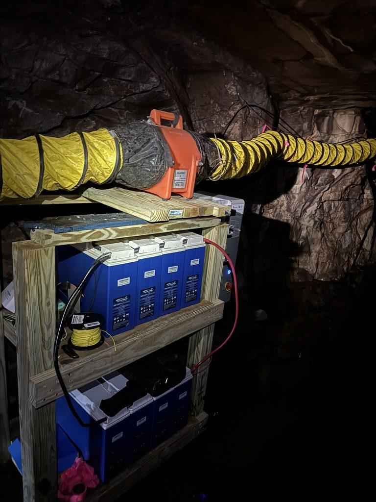
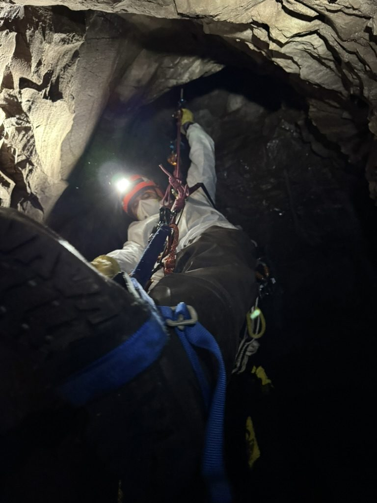

Bat ecology · white-nose syndrome · conservation
Helping hibernating bats outlast white-nose syndrome.
I study how the temperature of abandoned mines shapes the survival of hibernating bats after white-nose syndrome, and whether managers can change those conditions to help populations recover.
New in Conservation Biology · 2026
Relationship of temperature with declines and persistence of Myotis lucifugus after white-nose syndrome
Research
Four connected questions
My dissertation moves from a landscape pattern to an experiment: which hibernacula let bats persist, why temperature matters, and how bats use and move among sites over the winter.

Temperature & disease
Why little brown bats persist in some hibernacula and disappear from others after white-nose syndrome.

Experimental cooling
A fan-and-duct system that cools part of an abandoned mine to test whether colder roosts help bats.

Winter movement
Color-coded bands and paired surveys to learn whether bats move between hibernacula during winter.

Roost microclimate
How little brown and big brown bats choose where to hang within a hibernaculum.

About
A field ecologist working with managers.
I am a PhD candidate in Dr. Jared Wolfe's lab at Michigan Technological University. Most of my winters are spent underground in the abandoned copper and iron mines of Michigan's Upper Peninsula, counting bats and logging microclimate alongside biologists from the Michigan Department of Natural Resources.
I analyze data in R, mostly with Bayesian models, and I aim for results that a land manager can act on.